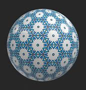
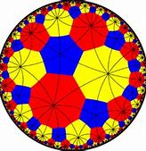
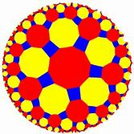

<mat-chip-list aria-label="Fish selection">
  <mat-chip>One fish</mat-chip>
  <mat-chip>Two fish</mat-chip>
  <mat-chip color="primary" selected>Primary fish</mat-chip>
  <mat-chip color="accent" selected>Accent fish</mat-chip>
</mat-chip-list>
<mat-grid-list cols="2" rowHeight="2:1">
  <mat-grid-tile></mat-grid-tile>
  <mat-grid-tile></mat-grid-tile>
  <mat-grid-tile></mat-grid-tile>
  <mat-grid-tile></mat-grid-tile>
</mat-grid-list>
